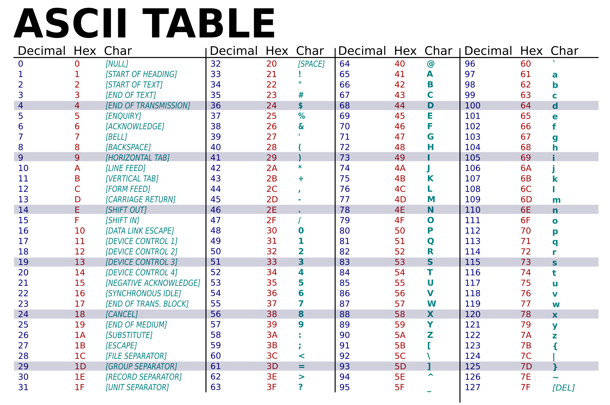

In het dagelijks leven gebruiken wij het decimale stelsel om te rekenen, met de cijfers 0
t/m 9. Computers gebruiken echter niet hetzelfde systeem, maar gebruiken het binair stelsel
om te rekenen. Het binair stelsel gebruikt maar twee symbolen: 0 en 1. Deze symbolen vertellen
de computer of schakelingen aan (1) of uit (0) staan. Dit maakt elektronische schakelingen
betrouwbaar, snel en foutloos.
In het binair stelsel heeft elke positie een waarde die steeds verdubbelt van rechts naar links.
... 16 - 8 - 4 - 2 - 1
Rekenen met deze posities gaat dus ook anders:
Vb) het getal 10011 in het binair stelsel wordt 19 in het decimale stelsel.
1 0 0 1 1
(1x16) + (0x8) + (0x4) + (1x2) + (1x1) = 19
Hieronder staat nog een leuk spelletje over het binair stelsel.
Een bit is de kleinste eenheid in het binair stelsel. Deze kan maar twee waarden hebben:
0 of 1. Een byte bestaat uit acht bits samen. Een byte kan 256 (2⁸) verschillende waarden
opslaan; van 0 t/m 255. Grotere hoeveelheden aan informatie kunnen in kilobytes (KB = 1024
bytes), megabytes (MB = 1024 KB) of gigabytes (GB = 1024 MB) aangeduid worden.
Om teksten op te slaan gebruiken computers het ASCII-systeem (American Standard
Code for Information Interchange). In het ASCII-systeem krijgt elke letter, cijfer
en symbool zijn eigen unieke nummer dat in binair wordt opgeslagen. De hoofdletter C
bijvoorbeeld heeft in ASCII de waarde 67. In binaire vorm is dit 01000011. De originele
ASCII-tabel heeft 128 tekens. Dankzij dit systeem kan binaire data omgezet worden zodat
wij die kunnen lezen.
